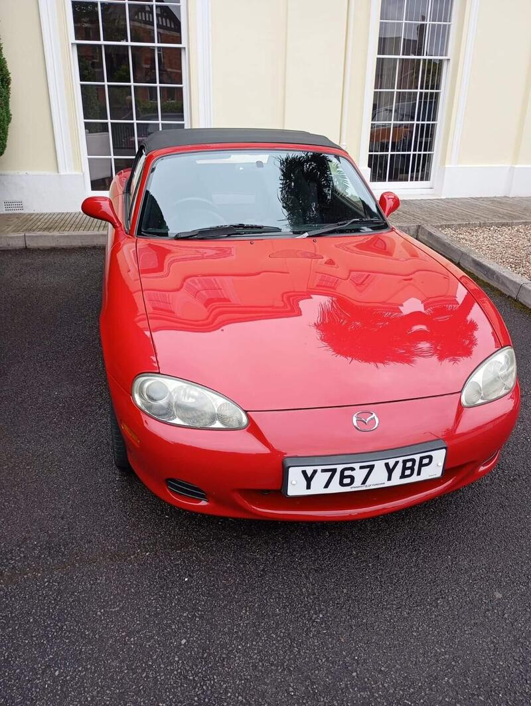
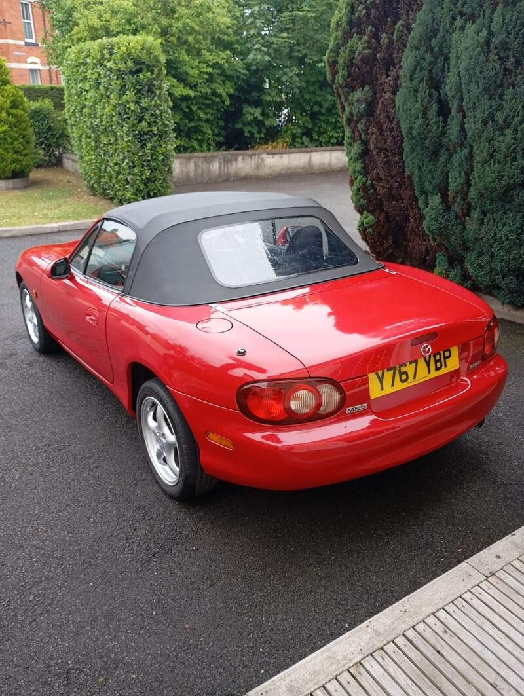
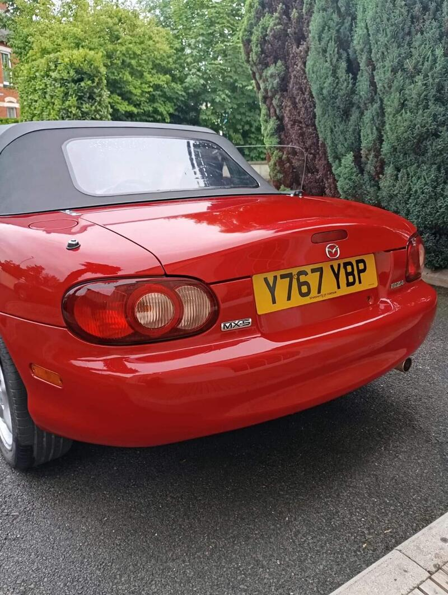

← All NB-FLRanked #16 of 28 for value




Seller photos from the AutoTrader ad.
✓ Checked 12 Oct
2001 · Standard
2001 MX-5 1.6
Long unsold. Make an offer.
£4,00094,754 miles · Newton Abbot
View on AutoTrader ↗Key facts
| Price | £4,000 |
|---|---|
| Year | 2001 |
| Miles | 94,754 |
| Variant | 1.6 |
| Edition | Standard |
| Engine | 1.6 |
| Colour | Red |
| Registration | 2001 (Y reg) |
| Owners | 5 owners |
| Seller | Private seller |
| Location | Newton Abbot |
| From Poole | ~95 mi (estimate) |
| Source | AutoTrader, checked 12 Oct 2026 |
Why buy it
- Described as rust free, with new clutch hydraulics, discs and pads (ad)
Things to check
- The ad ID suggests it was first listed in Aug 2025, so it's
The ad ID suggests it was first listed in Aug 2025, so it's been unsold a long time
- Y-reg 1.6
Y-reg 1.6
- Mk2.5 weak spots
Sills, rear arches and chassis rails for rust, the hood seams, and when the cambelt was last changed.
Seller says (extract)
“Mazda MX5 MK2.5 2001 Classic Red 1598cc In excellent condition for its age and the car has been well looked after. A fun reliable car, 12 Months MOT Rust Free New master and slave cylinders Brake discs and brake pads Battery Engine Coil 4 Good tyres The hood was replaced a few years ago.…”